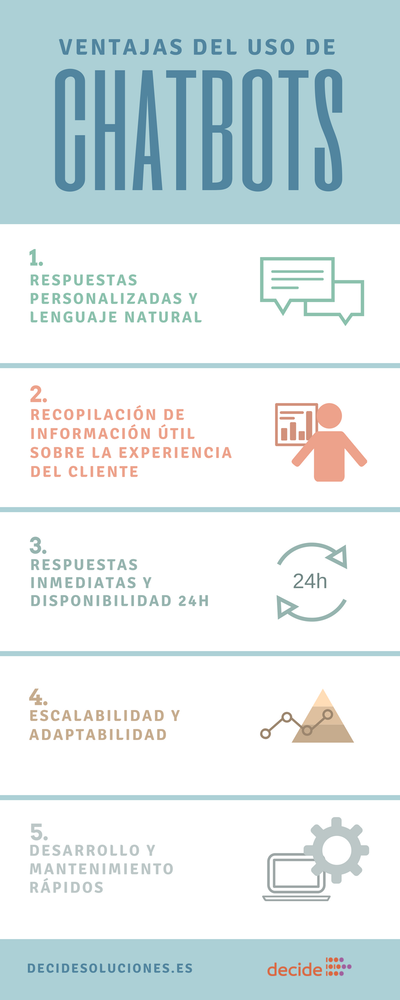

Un chatbot es un programa informático que utiliza inteligencia artificial y procesamiento del lenguaje natural para comprender las preguntas de los usuarios y responder automáticamente a ellas, simulando una conversación humana
La IA permite a los chat bots comprender, procesar y responder en el lenguaje de los usuarios, transformando positivamente el servicio al cliente
En este video del Compañero Youtuber Oscark, especifica información Acerca de los chatbots
los chatbots son importantes en la informática porque mejoran la eficiencia, la disponibilidad y la experiencia del usuario, lo que a su vez puede conducir a una mayor satisfacción del cliente y a un mejor rendimiento empresarial.
En este vídeo del compañero youtuber Juan Luis Restituyo explica como crearlo con un algoritmo en Python que permite dar respuestas básicas
En esta infografía se mencionan las ventajas del uso de chatbot
 ChatBot conceptos generales
Como realizar un Chatbot Sencillo
Vídeo Explicativo Chatbot
Imagenes referenciales y complementación